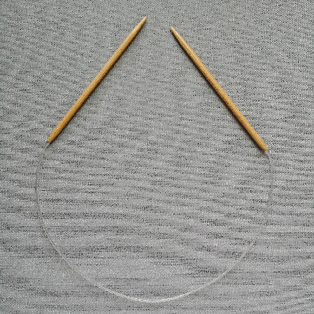
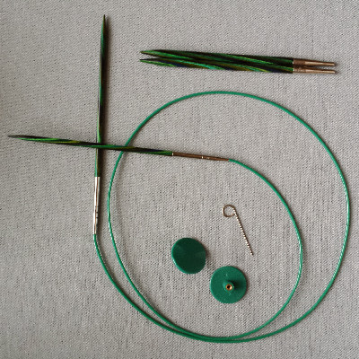
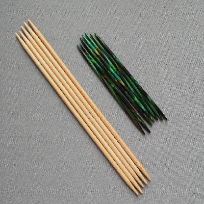

Yarn
Yarns come in multiple weights and fiber compositions. Yarn size and fiber type have a direct effect on the way the fabric responds and behaves while it is being used. The production process, species, breed, and blend all influence the look and feel of a yarn. Yarn choice should be carefully considered when beginning a project. The needle sizes below are a general guideline. You should use the needle size that gives you the needed gauge or desired look for your project.
| Weight | Recommended US Needle Size | Category* |
|---|---|---|
| Thread | 000-1 | 0: Lace |
| Cobweb | 000-1 | |
| Lace | 000-1 | |
| Fingering | 1-3 | 1: Super Fine |
| Sport | 3-5 | |
| DK | 5-7 | 3: Light |
| Worsted | 7-9 | 4: Medium |
| Aran | 7-9 | |
| Bulky | 9-11 | 5: Bulky |
| Super Bulky | 11-17 | 6: Super Bulky |
| Jumbo | 17+ | 7: Jumbo |
| *These codes are generally found on the ball bands wrapped around skeins of yarn. They can sometimes be misleading because they span multiple yarn weights. | ||
Common Yarns
Artificial fiber
- Acrylic
- Nylon
- Polyester
Plant Fiber
- Cotton
- Linen
- Bamboo
Animal Fiber
- Wool
- Alpaca
- Mohair (Goat)
- Cashmere (Goat)
- Angora (Rabbit)
Protein Fiber
- Silk
Back to the top
Types of Needles
Needles can be made of different materials, the most widely available being metal, wood, bamboo, and plastic. Wood and bamboo needles don’t let the yarn slip around as much and can be more comfortable to work with, but the points can wear down over time. Needle material is mostly a matter of preference.
- 
- 
- 
- Straight Needles
- A pair of needles with one pointed end and one end with a stopper. Used for knitting things flat. When knitting larger objects, they can cause wrist strain. When you think of knitting needles, this is probably what you are thinking of.
- Circular Needles
- A pair of needles that are connected by a cable. They can be a single size or have interchangeable tips. Circular needles can be used for knitting objects in the round or flat. When knitting larger objects, the cable supports the weight and help prevent wrist strain.
- Double Pointed Needles
- Needles that each have two pointed ends. They are generally used for knitting things in the round, such as socks, that have a small circumference. DPNs come in packages of 5-6 individual needles of the same size.